<title>Slime level colours</title>
<meta name="claude:viewport-fit-sides" content="cover">
<link rel="stylesheet" href="https://fonts.googleapis.com/css2?family=Inter:wght@400;600&family=Space+Grotesk:wght@600&display=swap">
<style>
/* Today's frames first, then the three options as pairs (map, zoom 6); dark-first like the game's screens. */
:root{--bg:#101318;--panel:#171b22;--fg:#e6e8ec;--muted:#9aa2ad;--gold:#f0a63f;--line:#2a303a;color-scheme:dark;
--body:Inter,system-ui,sans-serif;--head:"Space Grotesk",Inter,system-ui,sans-serif}
@media (prefers-color-scheme: light){:root:not([data-theme="dark"]){--bg:#f4f5f7;--panel:#fff;--fg:#1b1f26;--muted:#5b6370;--gold:#a8620a;--line:#d9dde3;color-scheme:light}}
:root[data-theme="light"]{--bg:#f4f5f7;--panel:#fff;--fg:#1b1f26;--muted:#5b6370;--gold:#a8620a;--line:#d9dde3;color-scheme:light}
body{background:var(--bg);color:var(--fg);font-family:var(--body);line-height:1.5}
main{max-width:1080px;margin:0 auto;padding-block:28px 48px;padding-left:max(16px,env(safe-area-inset-left,0px));padding-right:max(16px,env(safe-area-inset-right,0px));display:grid;gap:30px}
h1{font-family:var(--head);font-size:1.7rem;margin:0;text-wrap:balance}
h2{font-family:var(--head);font-size:1.25rem;margin:0}
p{margin:0;max-width:70ch}
.lede{color:var(--muted)}
figure{margin:0;display:grid;gap:8px}
img{width:100%;border-radius:6px;border:1px solid var(--line);display:block}
figcaption{color:var(--muted);font-size:.92rem;max-width:72ch}
figcaption b{color:var(--fg)}
.opt{display:grid;gap:10px;padding:16px;border:1px solid var(--line);border-radius:10px;background:var(--panel)}
.pair{display:grid;grid-template-columns:repeat(auto-fit,minmax(280px,1fr));gap:10px}
.tag{font-size:.78rem;letter-spacing:.06em;text-transform:uppercase;color:var(--gold);font-weight:600}
details{color:var(--muted)}
details>div{display:grid;gap:16px;margin-top:12px}
</style>
<main>
<header style="display:grid;gap:8px">
<h1>Slime level colours: the options</h1>
<p class="lede">Each option is rendered by the game itself on the same moment of step 10 (run seed 1, the Grudge, 40 s after landing, software GPU). Left of each pair: part of the map. Right: zoom 6 on a level 5 crystal. These are first renders; the picked one gets tuned and filmed in motion before it lands.</p>
</header>

<section class="opt">
<span class="tag">Today</span>
<h2>Orange to crimson to violet</h2>
<div class="pair">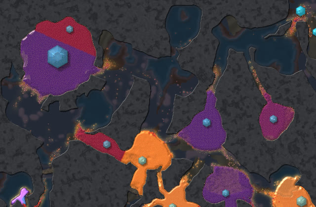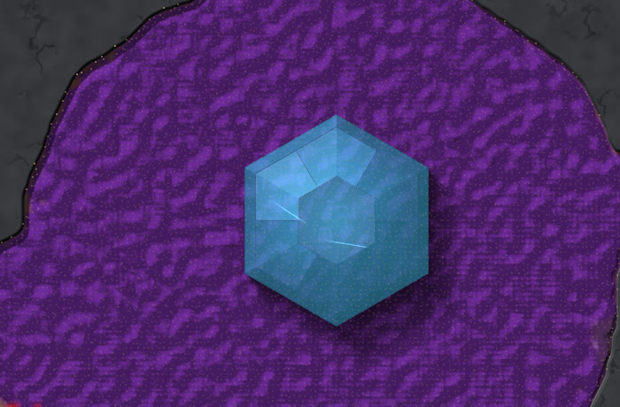</div>
<p class="lede">Violet is also the hunter's colour, crimson the bite flash, plum the core world's plants.</p>
</section>

<section class="opt">
<span class="tag">Option A, recommended</span>
<h2>Warm ramp with inner heat</h2>
<div class="pair">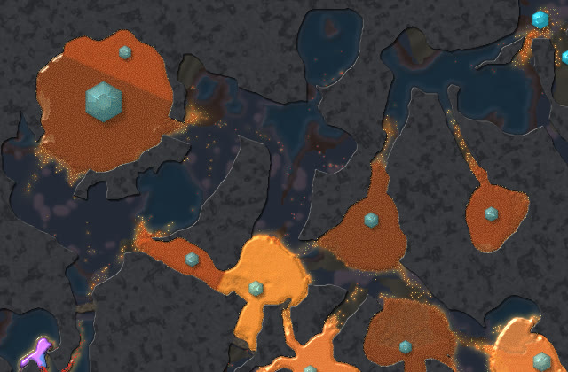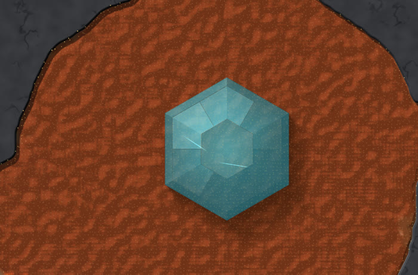</div>
<p class="lede">Gold, amber, deep orange, rust, brown, then near-black for levels 6 and 7. From level 2 the slime has a faint heat of its own, so the dark levels still read as live slime against the ground. No colour shared with hunters, bites or plants.</p>
</section>

<section class="opt">
<span class="tag">Option B</span>
<h2>Keep today's colours, lit from inside</h2>
<div class="pair">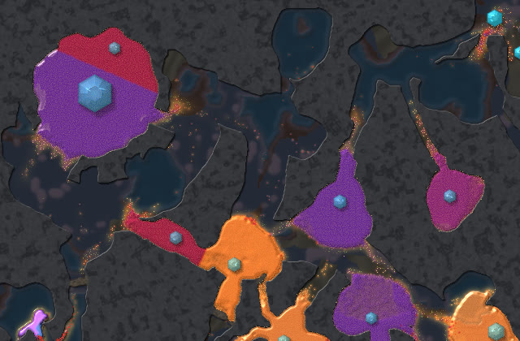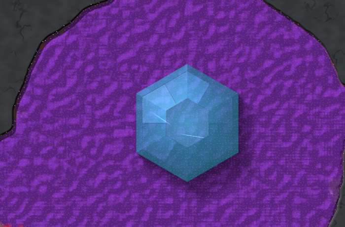</div>
<p class="lede">The same ramp, each level glowing a little in its own colour so it is brighter and less flat. Violet slime and violet hunters still share a colour.</p>
</section>

<section class="opt">
<span class="tag">Option C</span>
<h2>One gold, darker crust</h2>
<div class="pair">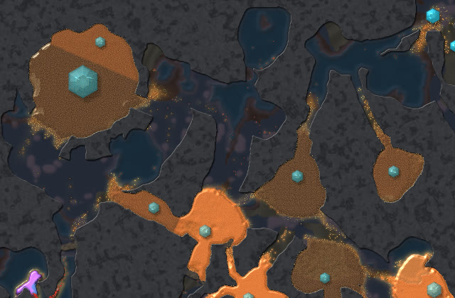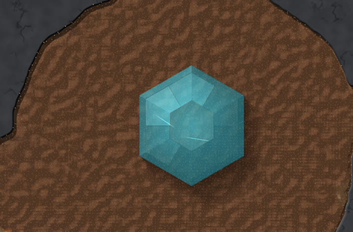</div>
<p class="lede">The slime's own colour throughout. Tougher slime darkens to a crust with a faint gold light. Reads most like one creature, least like separate kinds. At this first render, mid levels look like mud; it needs the most work.</p>
</section>

<p class="lede">In all three the grain inside a big body is the packed slime's own relief, and the same at every level. Veins and flow inside the thick body are a separate job (Look B).</p>

<details>
<summary>The first review's frames</summary>
<div>
<figure>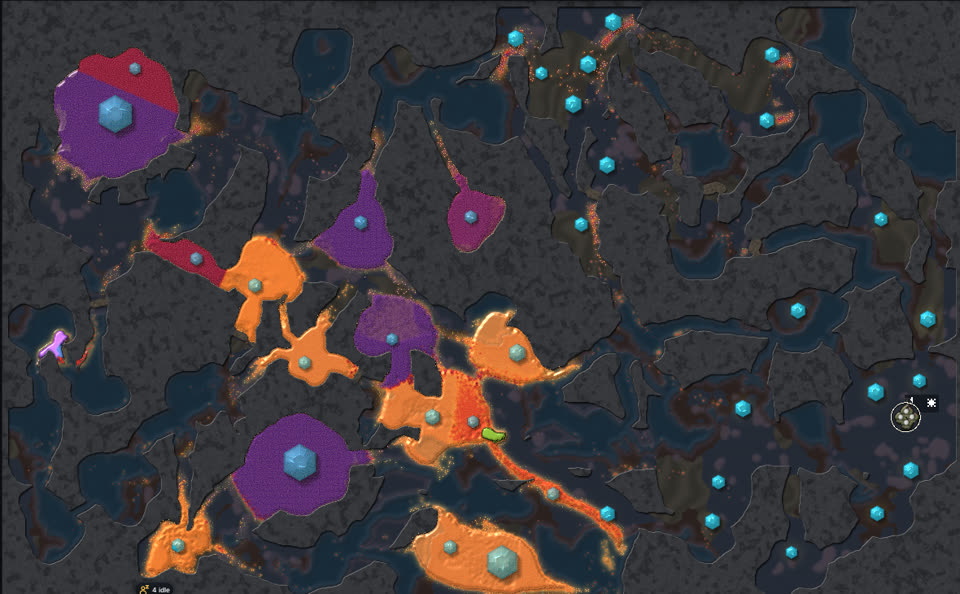<figcaption><b>Step 10, whole map.</b> Flat violet, plum and crimson beside glossy orange.</figcaption></figure>
<figure>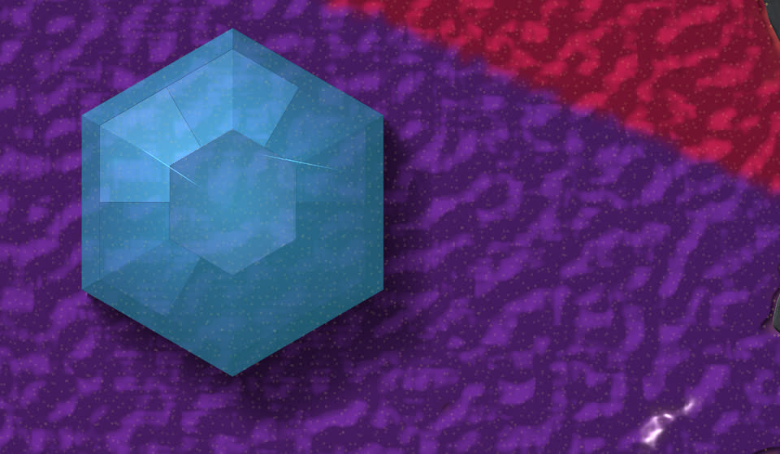<figcaption><b>Zoom 12.</b> The seam between levels is a soft band, which is right.</figcaption></figure>
<figure>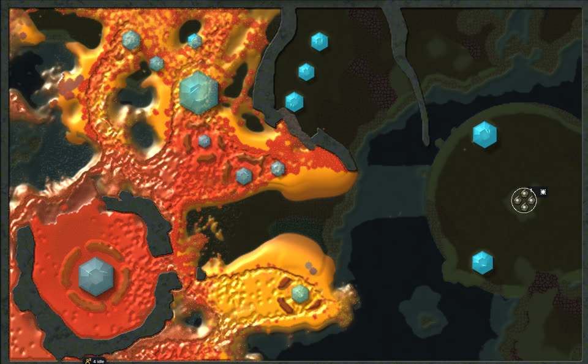<figcaption><b>Step 4.</b> Levels 0 to 3 keep the gloss; the red-orange is close to the flush of slime under fire.</figcaption></figure>
</div>
</details>
</main>
